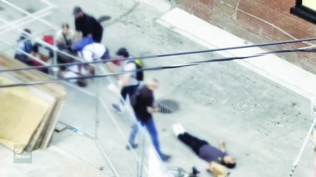

多伦多警队一名便衣警探，在上周末逮捕一名疑犯时，涉嫌对另一名看似上前想「劝解」的市民过度使用武力，导致对方头部撞地受伤不轻。
多伦多警队一名便衣警探，在上周末逮捕一名疑犯时，涉嫌对另外一名看似上前想「劝解」的市民过度使用武力，导致对方头部撞地受伤不轻。
有片段显示，上周六（3日）傍晚7时左右，多名便衣警探在登打士东街（Dundas Street East）夹维多利巷（Victoria Street Lane）地区的一条小巷中，试图制服一名男子。
便衣警将疑犯按倒在地，先后有两、三人压在该男子身上，但被捕男子拼命反抗，探员无法戴上手铐。有多名市民在一旁围观，其中一名男子缓慢走上前，把手放在其中一名白色T恤衫探员的后腰部。
白衫警探立刻甩手把那市民的手打开，而那市民却是不依不饶，还继续伸手去碰那警探的手。那白衫警探一边继续甩开对方的手，同时嘴里还在说甚么似的，另一边还在努力帮助同僚控制疑犯。
白衫警探身边的一名黑衫警探，此时从胸口处掏出挂在脖子上的警徽或证件向那位市民展示，似要说明自己正在执行公务，请他不要干扰，并且还走上前伸展开双手示意那市民离开。
那位市民已经开始后退，但这时从远处突然跑来一名灰衫警探，他二话不说猛推那市民的肩部，令该市民仰天摔倒，后脑勺似乎猛击地面，身体顿时出现僵直的状态。
其他路人看到此种情形，就围上来查看倒地市民的情况。那名动手推人的警探先是看了一眼，然后又走回去协助同伴逮捕那名疑犯。在确定疑犯终于束手就擒之后，灰衫警探再次过来查看，似乎遭到其他市民的批判，于是该警探又指向同伴方向似乎在辩解。
到片段结束，那警探都没有俯下身近距离察看那受伤市民的具体情况。事发后，专职调查涉及警方的市民重伤或死亡事件的安省特别调查组（SIU）表示，他们已在跟进此事，因为「该男子被急救服务送去医院，在医院被诊断为重伤。」
多伦多警方表示，他们在8月4日凌晨向SIU通报这宗事件，但由于目前正处在调查阶段，故无法进一步评论。
多伦多警察协会主席里德（Jon Reid）表示，平民永远不应该牵涉进警察的行动，因为这会「在已经紧张和不稳定的情况下造成不可预测性」。
「除这宗意外，我们可以说，公众永远不应该干涉警察的行动，包括与警察进行身体接触。现场的警员不知道干涉者的动机或意图，也不知道他们是否会携带武器、是否神志不清等。而警察接受过使用最少的必要武力的培训。」